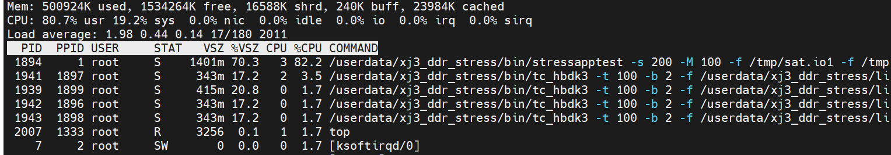
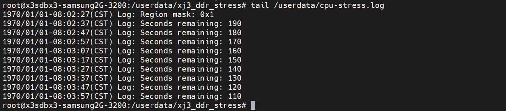
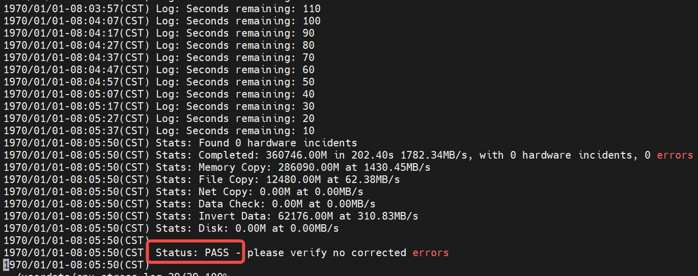
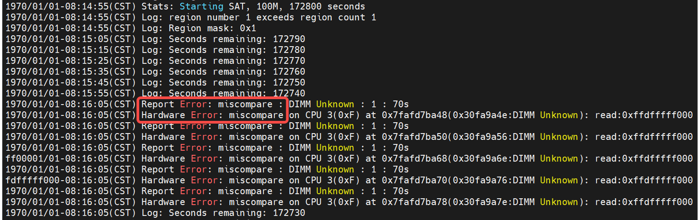

4.3.14. DDR压力测试方案
4.3.14.1. 目的
本文主要介绍DDR颗粒在高低温环境下长时间大压力运行的测试方法。
4.3.14.2. 名词解释
判定术语： PASS：测试完成后，DUT所有功能、性能符合预期，无异常发生 FAIL：测试完成后，DUT功能出现损坏或功能失效，或未达到指标要求
4.3.14.3. 测试项
| 测试类别 | 环境温度 | 测试时长 |
|---|---|---|
| DDR常温压力测试 | 25度 | 48H |
| DDR高温压力测试 | 60度 | 48H |
| DDR低温压力测试 | -25度 | 48H |
4.3.14.4. 测试环境
DUT压力程序
| ITEM | 版本号/设备编号 | 适用测试项 |
|---|---|---|
| 测试脚本 | xj3_ddr_stress.tar.gz | 压力测试通用 |
| DUT数量 | 5台及以上 | 压力测试通用 |
从 X3M附加工具包 的 DDR_Stress_Test选择对应sdk版本的目录下载 xj3_ddr_stress.tar.gz
压力程序使用方法
1、通过网口或者其他工具将 xj3_ddr_stress.tar.gz 传输到 XJ3 的 userdata 目录下
2、进入 XJ3 侧的 userdata 目录 cd /userdata
3、解压测试文件
tar -zxvf xj3_ddr_stress.tar.gz
4、给 xj3_ddr_stress 文件夹加权限
chmod 777 xj3_ddr_stress
5、进入 cd xj3_ddr_stress 目录
cd xj3_ddr_stress
6、设置CPU模式和降频温度
# 若设备重启需再次配置这两条指令
echo performance > /sys/devices/system/cpu/cpufreq/policy0/scaling_governor
echo 105000 > /sys/devices/virtual/thermal/thermal_zone0/trip_point_1_temp
7、执行压力测试脚本, 后台运行cpu test和bpu test
sh ./scripts/xj3-stress.sh
8、top检查运行状态

9、cpu test log存放目录在 /userdata/cpu-stress.log， 查看当前运行状态
# 10s 会打印一次
tail /userdata/cpu-stress.log

注：程序默认连续运行48h（如下图-s参数后面的172800，单位：s）
10、bpu test log 存放在/userdata/bpu-stress.log，查看当前运行状态
# 只要 log 在更新，就是在测试，默认一直运行
tail /userdata/bpu-stress.log
11、检查cpu test result, 如果/userdata/cpu-stress.log最后Status显示PASS，且日志中未出现”error” 或者 “miscompare” 关键字，表示测试PASS;

12、如果/userdata/cpu-stress.log最后Status显示FAIL，或者日志中出现了”error” 或者 “miscompare” 关键字，表示测试FAIL;

13、检查bpu test result, 如果bpu_stress.log 中出现 error 或者 system hung 等关键字，表示测试FAIL。